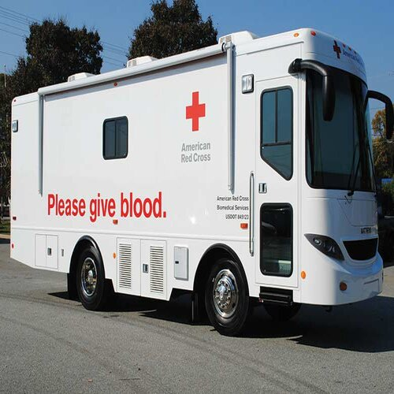
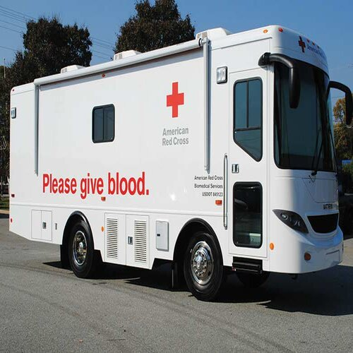
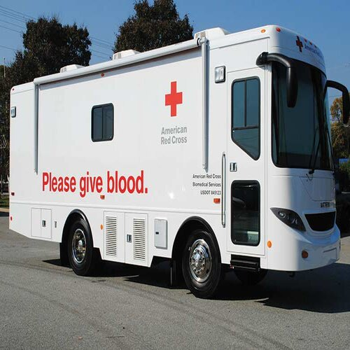

Destiny Diaz
My name is Destiny Diaz and I am a second-year who is currently majoring in Psychology at UC Riverside. I am also a part of Alpha Pi Sigma, which is a multicultural sorority that focuses on three pillars: Academics, Sisterhood, and Community Service. It also gives me the opportunity to network with other influential people. Another reason why I joined the sorority is due to the importance of Community Service to me. I was involved in the AVID Club in high school and we focused greatly on giving back to the community. We did things such as Canned Food Drives, Care Packages for the Homeless, and even Blood Drives. Everything that I did in high school has made me realize how much I value community service and how it is something that I want to include in my daily life. Going to college was always a dream of mine so I worked extremely hard in high school in order to make sure that my dream came true. After a stressful four years of high school which was filled with AP classes and extracurricular activities, I graduated with a 4.1 GPA and I even got the opportunity to speak at my graduation ceremony. This was an amazing experience for me and it allowed me to get over my fear of public speaking and speak professionally in front of a large audience of people. As a result of my hard work, I got into several amazing colleges including UC Santa Barbara, UC Riverside, CSU Long Beach, and many others. After a long deliberation and many trips to visit these colleges, I decided that UC Riverside would be the perfect fit for me and what I wanted out of my college experience. The Diversity here makes me feel comfortable and it makes my college experience even more special. I decided to major in Psychology when I got to UC Riverside because mental health has also been very important to me and I wanted to make sure that my career has something to do with mental health. My goal with a degree in Psychology is to start my own nonprofit to help rehabilitate the homeless. I hate the way that homeless people are treated in society today. Many people just see them as lazy. Many do not even consider them to be human beings. I have always believed that anyone can end up in that position and that we should judge people just because they are going through a hard time. I also believe that more goes into helping homeless people get off the streets than just getting them a job and somewhere to live. The mental trauma from being on the streets for so long must be horrible. My goal is to provide mental health care for people trying to get off the streets and help them with the mental transition that comes with getting people off the street. I am continuing to focus on helping the homeless as much as I can until I can get my degree and start my non-profit.
Experience
Secretary for AVID Club
• Took notes for meetings
• Ran Blood Drives
• Planned events
Volunteer at Senior Living Community
• Helped serve lunch to elderly
• Communicated and spent time with elderly
Education
UC Riverside
Portfolio
 

